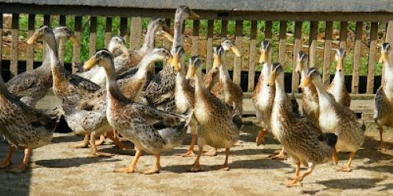
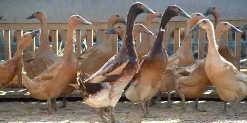
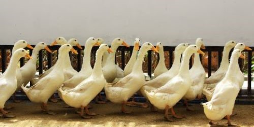
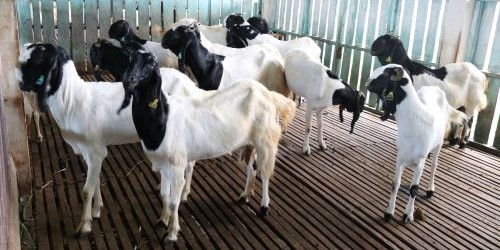
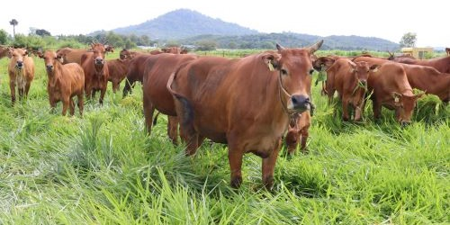
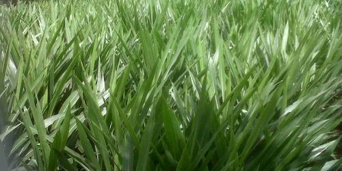
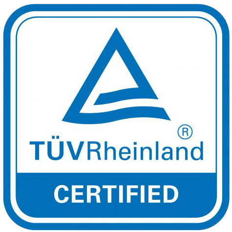
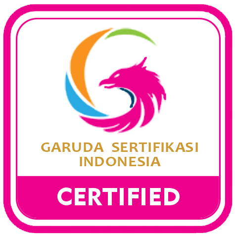

Tentang Kami
Balai Pembibitan Ternak Unggul dan Hijauan Pakan Ternak Pelaihari merupakan Unit Pelaksana Teknis Kementerian Pertanian yang berada dibawah naungan dan bertanggung jawab kepada Direktorat Jenderal Peternakan dan Kesehatan Hewan Kementerian Pertanian Republik Indonesia. Didirikan pada tanggal 25 Mei 1978
1978 - 2002 | BPTHMT
Balai Pembibitan Ternak dan Hijauan Makanan Ternak Pelaihari
2002 - 2013 | BPTUKDI
Balai Pembibitaan Ternak Unggul Kambing, Domba dan Itik
2013 - Sekarang | BPTUHPT
Balai Pembibitaan Ternak Unggul dan Hijauan Pakan Ternak Pelaihari
--- PRODUK ---
Komoditas Produk Unggulan Kami
Kami menyediakan komoditas produk peternakan antara lain : bibit ternak itik alabio, bibit ternak itik mojosari, bibit ternak itik PMP, bibit ternak kambing Peranakan Etawa (PE), bibit ternak Sapi Madura dengan kualitas unggul.
--- ITIK ALABIO ---
- Itik Alabio merupakan itik asli Kalimantan Selatan keturunan dari itik mallard berasal dari Desa Marmar Kec. Amuntai Selatan, Kab. Hulu Sungai Utara (HSU)
--- ITIK MOJOSARI ---
- Itik mojosari berasal dari desa Modopuro, Kec.Mojosari, Kab. Mojokerto, Jawa Timur merupakan itik lokal petelur unggul yang banyak digemari konsumen.
--- ITIK PMP ---
- Itik PMP merupakan persilangan itik peking dan itik mojosari putih untuk menyediakan permintaan konsumen akan rumpun itik pedaging dengan bobot badan dan tingkat pertumbuhan yang tinggi.
--- KAMBING PE ---
- Kambing Peranakan Ettawa berasal dari Kecamatan Kaligesing, disekitar kawasan perbukitan Menoreh, Purworejo - Jawa Tengah.
--- SAPI MADURA ---
- Sapi Madura adalah bangsa sapi potong lokal asli Indonesia yang terbentuk dari persilangan antara banteng dengan Bos indicus atau sapi Zebu
--- HIJAUAN PAKAN TERNAK ---
- Hijauan Pakan Ternak adalah hijauan atau rumput-rumputan yang memiliki angka kecukupan gizi yang tepat untuk ternak ruminansia, tidak semua rumput dapat dikategorikan hijauan makanan ternak.
--- Layanan Kami ---
Kami senantiasa berusaha memberikan layanan terbaik untuk anda dan seluruh masyarakat Indonesia
Penjualan Produk Peternakan
Kami menjual Produk Peternakan berupa bibit ternak itik alabio, itik mojosari, itik PMP, Kambing Peranakan Etawa (PE), Sapi Madura, Hijauan Pakan Ternak dan produk samping hasil peternakan lainnya
Praktek Kerja Lapangan
Praktik Kerja Lapangan (PKL) adalah bentuk penyelenggaraan pendidikan dan pelatihan kejuruan yang diikuti oleh siswa dengan bekerja secara langsung di dunia usaha, industri maupun pemerintahan
Penelitian Ilmiah
Penelitian ilmiah sering diasosiasikan dengan metode ilmiah sebagai tata cara sistematis yang digunakan untuk melakukan penelitian.
Kunjungan Lapangan
Kunjungan lapangan merupakan rangkaian proses kegiatan pembelajaran, dengan ini siswa mampu memperdalam pemahaman teori dan praktik yang dipelajari di dalam ruang kelas melalui pengalaman yang langsung berinteraksi dengan masyarakat.
Magang Kerja
Magang atau Praktik Kerja adalah aktivitas pembelajaran yang memberikan wawasan dan pengalaman praktis kepada mahasiswa Kependidikan dan Non-Kependidikan mengenai kegiatan riil di lembaga pendidikan dan industri sehingga mahasiswa memiliki kompetensi yang memadai dalam melaksanakan tugas sesuai dengan bidang keahliannya.
Bimbingan Teknis
Bimbingan Teknis memiliki pengertian sebagai sebuah layanan bimbingan dan penyuluhan yang diberikan oleh tenaga ahli atau profesional dibidangnya dengan tujuan meningkatkan kualitas Sumber Daya Manusia.
--- SERTIFIKASI ---
Demi menjaga kualitas dan kepercayaan pelanggan dan masyarakat kami berkomitmen dengan melakukan sertifikasi terhadap pelayanan kami
Sistem Manajemen Mutu
ISO 9001:2015 merupakan standar manajemen mutu yang dikeluarkan oleh International Organization for Standardization dikenal juga dengan ISO
Sertifikat diterbitkan oleh
 Sistem Manajemen Anti Penyuapan
ISO 37001 adalah sistem manajemen anti suap yang dirancang untuk membantu organisasi menetapkan, menerapkan, memelihara dan meningkatkan program kepatuhan anti-suap.
--- Publikasi Terkini ---
Seluruh informasi, berita, pengumuman dan artikel terkini, terbaru dan teraktual dapat anda simak di sini
- Semua
- Berita
- Pengumuman
- Artikel